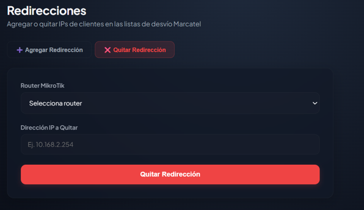

La consola de operaciones de red que unifica todo lo que tu equipo necesita en una sola pantalla. Redirecciones de tráfico, soporte de Nivel 1 y 2, bitácora de eventos y revisión granular de clientes — sin saltar entre herramientas.
Diseñado en colaboración con operadores de red reales. Cada panel, cada acción, cada vista optimizada para reducir el tiempo de respuesta y eliminar los errores manuales.

Desde Jah-NOC puedes aplicar desvíos de tráfico en segundos: redirige clientes entre nodos de acceso, redistribuye carga entre backbones durante mantenimientos y aplica políticas de QoS por segmento de red. Cada cambio queda registrado en la bitácora con el usuario, timestamp y justificación. Nunca más "¿quién hizo ese cambio?"
Ficha completa del suscriptor: historial de incidentes, estado de ONT, velocidad en tiempo real, IP asignada, plan contratado y bitácora. Todo en un solo clic desde la consola NOC.
Ejecuta desvíos de tráfico de emergencia con flujos de trabajo guiados: selecciona el segmento, elige el nodo de destino, revisa el impacto estimado y aplica el cambio en tiempo real.
Cada acción ejecutada en Jah-NOC queda registrada: configuraciones aplicadas, tickets abiertos, desvíos activados, cambios de estado. Filtrado por usuario, fecha, tipo de evento y nodo afectado. Cumplimiento regulatorio garantizado.
Auditoría CompletaScripts de diagnóstico con un clic: ping, traceroute, diagnóstico ONT, reset de PPPoE, verificación de señal óptica. El agente de soporte resuelve en la primera llamada sin escalar. Tiempo de resolución L1 reducido en un 55%.
L1 ToolkitCuando un caso supera la capacidad L1, Jah-NOC transfiere el ticket al ingeniero de red correcto, adjuntando automáticamente el diagnóstico realizado, historial del nodo y logs relevantes. Cero pérdida de contexto en la escalación.
Escalación L2Jah-NOC estructura el caos operativo en un protocolo claro y repetible que cualquier operador puede seguir.
Jah-NOC recibe alertas de Zabbix y JAH Sentinel, las clasifica por severidad y las asigna al operador de turno con contexto completo ya incluido.
El operador ejecuta las herramientas de diagnóstico integradas sin salir de la interfaz: ping, OLT status, estado de sesiones PPPoE y análisis de interfaz.
Según el diagnóstico, el operador aplica el desvío de tráfico, ejecuta la solución o escala a L2 con toda la información necesaria empaquetada en el ticket.
El caso se cierra con causa raíz documentada, acciones tomadas y tiempo de resolución registrado. Los datos alimentan los reportes de SLA mensuales automáticamente.
Contáctanos para una demostración en vivo de Jah-NOC. Te mostramos cómo tu equipo pasaría a operar desde el día uno.